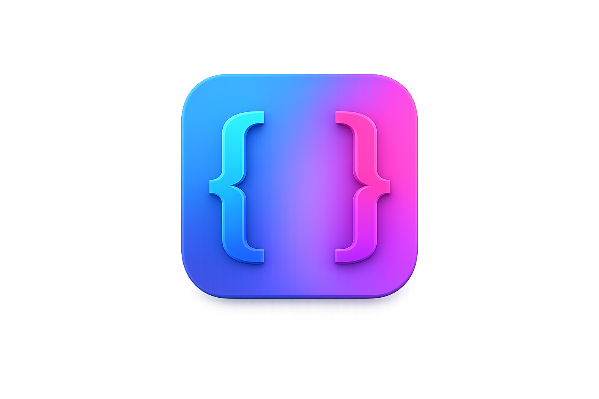
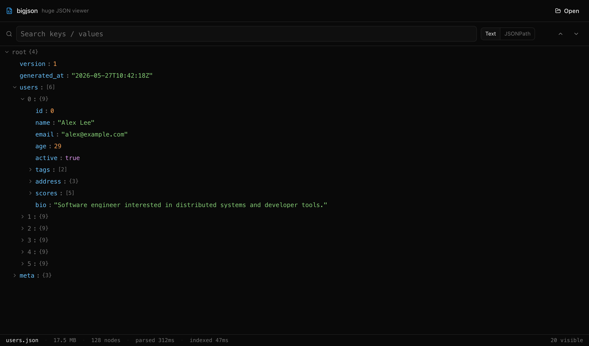

bigjson — huge JSON file viewer
Fast, native desktop viewer for large JSON files. Open 100MB, 500MB, even multi-gigabyte JSON instantly. Built with Tauri, Rust (simd-json), and React. The open-source alternative to Dadroit for inspecting huge JSON dumps, API exports, analytics datasets, and log files that crash VS Code, Sublime Text, and other text editors.

Why bigjson
VS Code and other text editors treat JSON as editable text — UTF-16 string in RAM, tokenizer, syntax highlighter, undo buffer, plugins. That's why they freeze on 100MB+ files. Online JSON viewers can't handle anything past ~10MB and you'd never paste private data into them anyway. bigjson is a read-only viewer that parses the file natively in Rust, builds a flat index of every node, and renders only the rows visible on screen. RAM usage stays close to the file size instead of 3-10×.
Features
Open huge JSON files
100MB in under a second; multi-GB on a 16GB machine.
Virtualized tree
Millions of nodes scroll smoothly. Only visible rows render.
Lazy expansion
Children load on demand, even for huge arrays.
JSONPath search
$.users[*].email, $.orders[?(@.total > 1000)], etc.
Text search
Case-insensitive substring across all keys and values.
Copy node or JSONPath
Pretty-printed subtree, or the exact path to clipboard.
Cross-platform
Native builds for macOS (universal), Windows, Linux.
Offline + private
No network calls. Nothing leaves your machine.
Install
- macOS: download the
.dmg, drag bigjson to Applications. On first launch right-click → Open, or runxattr -cr /Applications/bigjson.app. - Windows: run the
.exeinstaller. SmartScreen will warn — click "More info" → "Run anyway". - Linux:
chmod +x bigjson_*.AppImage && ./bigjson_*.AppImage, or install the.deb.
FAQ
How big a JSON file can bigjson open?
On a machine with 16GB of RAM it comfortably opens JSON files up to ~3GB. v2 will add memory-mapped streaming for files larger than RAM.
Is bigjson free?
Yes — MIT licensed, no telemetry, no ads, no sign-in.
Does bigjson work offline?
Yes. It's a native desktop app — no network calls, no cloud parsing, no data leaves your machine.
Is bigjson a Dadroit alternative?
That's the inspiration. bigjson is open-source and free. Dadroit is closed-source with a free tier.